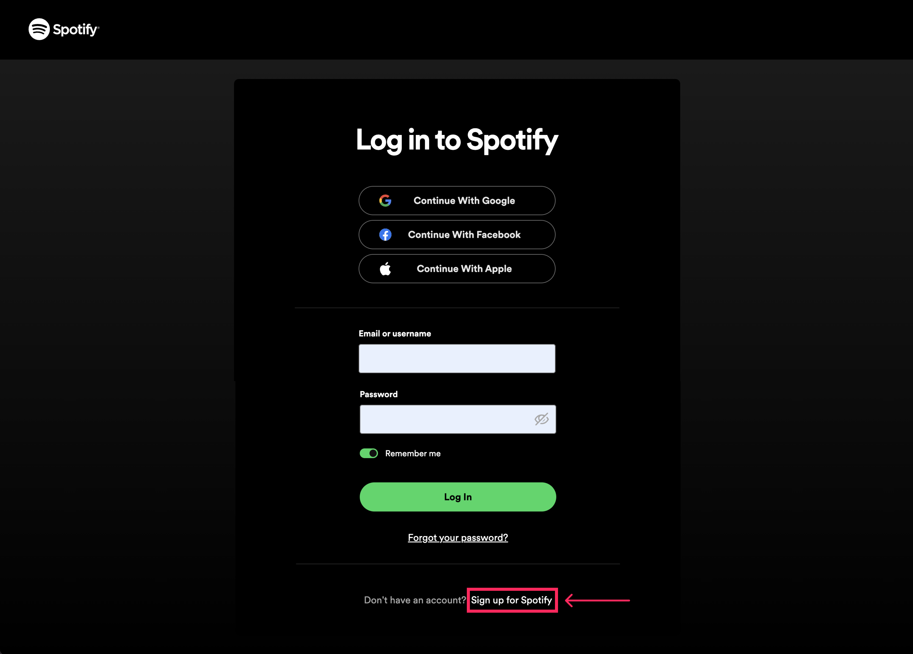
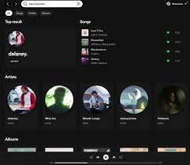
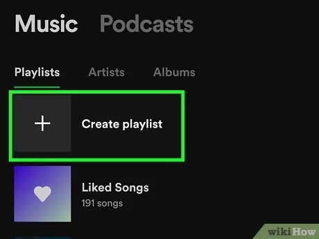

User-friendly Website
By Bogdan Sergachev
What is a User-friendly Website?
A user-friendly website is designed to be simple, convenient, and intuitive for all users, providing a positive user experience (UX).
How to Use Spotify for Listening to Music
Step-by-step guide to creating an account, finding music, and making playlists.

Registering on Spotify
- Go to Spotify.com or download the app.
- Click "Sign Up" or "Create Account".
- Register via email, Google, or Facebook.

Searching for Music
- Enter a song, artist, or album in the search bar.
- Choose from the displayed results.
- Click the desired song or album to start listening.

Creating a Playlist
- Go to the "Library" section and click "Playlists".
- Click "Create Playlist" and name it.
- Add songs by selecting "Add to Playlist" from the menu.

Conclusion
Now you know how to create an account, search for music, create playlists, and enjoy Spotify on any device.